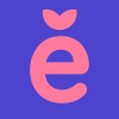

About Me
I am a FullStack Web Developer based in Vallromanes (Barcelona) and currently studying
Computer Engineering at Universitat de Girona (UdG).
Having previously completed a Higher Vocational Degree (CFGS) in Web Applications
Development (DAW) at Institut Carles Vallbona, I combine strong theoretical computer science
foundations with hands-on web development experience. My main focus is on modern web technologies,
strong typing, and accessible, responsive web design.
Work Experience
TechDocs Studio
- Developing and maintaining modern documentation websites and developer tools.
- Working with Next.js, TypeScript, and Sphinx to build fast, structured web platforms.
- Collaborating on internal workflows and front-end optimization.
Biel.ai
- Built accessible, user-friendly front-end interfaces for digital vision AI solutions.
- Worked with TypeScript, Stencil.js, and modern CSS.

Berrly
- Maintained web modules for the company's association management and ticketing SaaS platform.
- Developed responsive front-end views and resolved UI/UX bug tickets.
- Assisted in database management (MySQL) and version control workflows with Git.
Education
Universitat de Girona (UdG) · Escola Politècnica Superior
Institut Carles Vallbona · Granollers
Institut Vilanova del Vallès